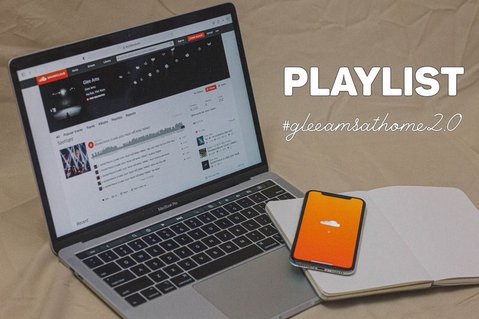
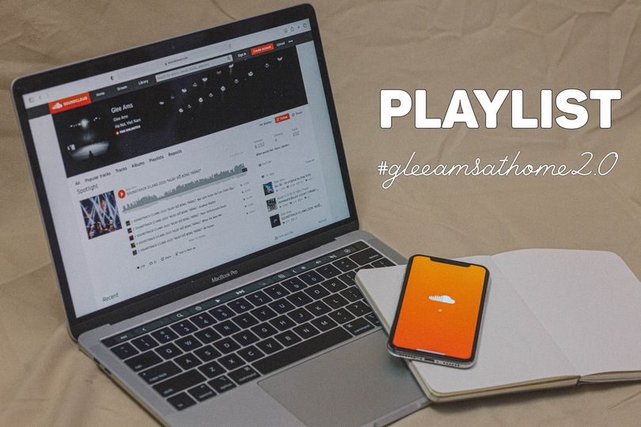

I. Giới thiệu Glee Ams
Âm nhạc. Đam mê. Những phím đàn. Đó chính là những điều đã tạo nên Glee Ams. Được thành lập vào năm 2011, bằng sự sáng tạo cùng với bề dày hoạt động tính đến nay đã chạm mốc một thập kỷ, Glee Ams gây được tiếng vang không chỉ trong nội bộ trường THPT chuyên Hà Nội-Amsterdam mà còn trong cộng đồng học sinh, sinh viên trên toàn thành phố.


 
